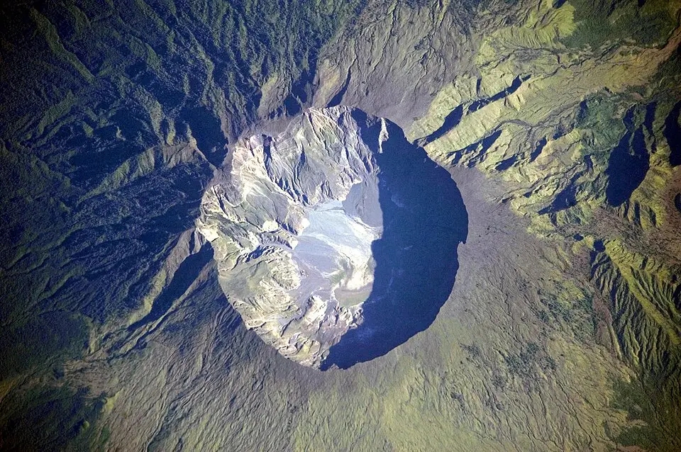
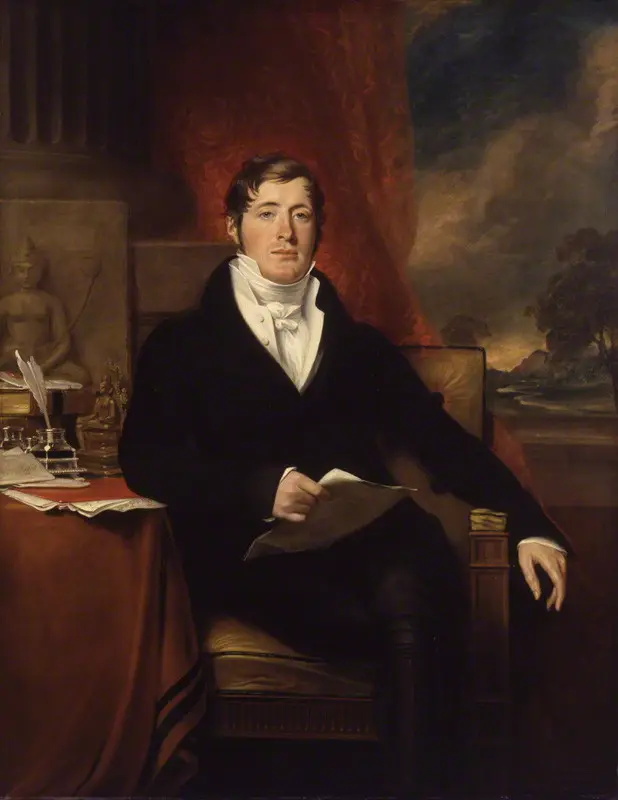
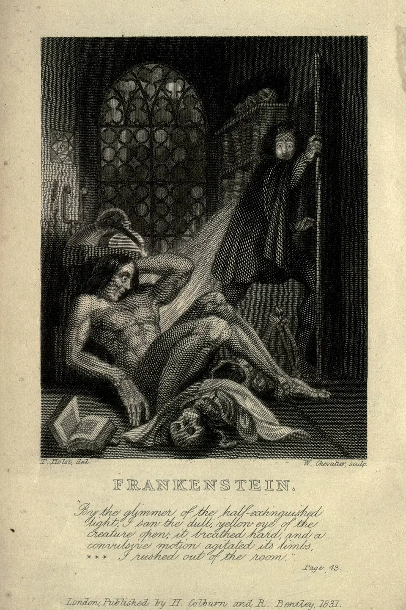

Tambora 1815: ngọn núi lửa xóa một vương quốc và một mùa hè
Tháng 4 năm 1815, núi Tambora trên đảo Sumbawa phun trào mạnh nhất trong lịch sử có ghi chép, vùi một tiểu quốc cùng thứ tiếng của nó dưới tro. Năm sau, tuyết rơi giữa tháng 6 ở Mỹ, châu Âu mất mùa, và bên hồ Geneva, Mary Shelley bắt đầu viết Frankenstein.

Tối ngày 5 tháng 4 năm 1815, ở Java, người ta nghe những tiếng nổ trầm từ xa vọng lại. Hồi ký của Stamford Raffles, người đứng đầu chính quyền Anh trên đảo, ghi rằng gần như ai cũng tưởng đó là tiếng đại bác. Một toán lính được điều đi từ Yogyakarta vì sợ một đồn lân cận bị tấn công. Thật ra tiếng nổ đến từ núi Tambora trên đảo Sumbawa, cách Batavia khoảng 1.260 km. Năm ngày sau, ngọn núi ấy gây ra vụ phun trào lớn nhất trong lịch sử có ghi chép, và một năm sau, mùa hè biến mất ở hai bờ Đại Tây Dương.
Khi khói tan, ngọn núi từng cao khoảng 4.300 m chỉ còn 2.851 m, mất chừng một phần ba chiều cao.
Đêm 10 tháng 4
Khoảng 7 giờ tối ngày 10 tháng 4, núi bước vào cơn dữ dội nhất. Các dòng chảy mây nóng, tức hỗn hợp khí và đá nóng lao xuống sườn núi, tràn ra tới biển. Cột phun vượt độ cao 43 km, lên tận tầng bình lưu. Tiếng nổ đêm đó vang tới Trumon trên đảo Sumatra, cách hơn 2.600 km.
Núi phun ra khoảng 37 đến 45 km³ vật chất quy về đá đặc, được xếp cấp 7 trên thang chỉ số bùng nổ núi lửa (VEI). Khoảng 10 giờ đêm, sóng thần cao tới 4 m ập vào Sanggar. Khi khói tan, ngọn núi từng cao khoảng 4.300 m chỉ còn 2.851 m, mất chừng một phần ba chiều cao. Đỉnh núi nay là một miệng hố sụt rộng 6 đến 7 km. Raffles sau đó cử trung úy Philips sang Sumbawa. Ông thấy làng mạc ở Dompu và Bima gần như bỏ trống.
Năm không có mùa hè


Thứ gây hại lâu dài nhất là lưu huỳnh. Khoảng 25 đến 30 triệu tấn lưu huỳnh, theo ước tính phổ biến, bị đẩy lên tầng bình lưu. Màn sương ấy che bớt ánh nắng, làm nhiệt độ trung bình toàn cầu giảm khoảng 0,4 đến 0,7 °C trong những năm sau.
Năm 1816 được gọi là "năm không có mùa hè". Ở New England, sương giá xuất hiện ngày 4 tháng 6. Ngày 6 tháng 6, tuyết rơi ở Albany, New York. Ở châu Âu, đó là mùa hè lạnh nhất trong chuỗi số liệu từ 1766 đến 2000. Mất mùa dẫn tới các cuộc bạo loạn vì bánh mì năm 1816 và 1817, dữ dội nhất trên lục địa kể từ Cách mạng Pháp.
Châu Á cũng chịu ảnh hưởng. Ở Vân Nam, giáp biên giới Việt Nam, một nạn đói lớn xảy ra dưới triều Thanh. Ở Ấn Độ, gió mùa đến muộn, dịch tả mới bùng lên ở Bengal. Chưa thấy nguồn nào chép tác động của nó lên Việt Nam thời Gia Long.
Tháng 6 năm 1816, bên hồ Geneva ở Thụy Sĩ, mưa không ngớt giữ chân một nhóm khách người Anh trong biệt thự Villa Diodati: Lord Byron, nhà thơ Percy Shelley, Mary Godwin, sau này là Mary Shelley, và bác sĩ John Polidori. Họ thi nhau viết truyện ma. Từ cuộc thi ấy ra đời tiểu thuyết Frankenstein của Mary Shelley và truyện "The Vampyre" của Polidori.
Vương quốc Tambora dưới lớp tro


Dưới chân núi có xứ Tambora, theo Sigurdsson ước tính khoảng 10.000 dân. Các nhà thám hiểm Hà Lan và Anh đầu thế kỷ 19 ghi rằng người ở đây nói một thứ tiếng không giống bất kỳ tiếng nào khác ở Indonesia. Sau năm 1815, thứ tiếng ấy biến mất. Có thể đó là ngôn ngữ cuối cùng còn sót lại từ trước khi người Nam Đảo đến miền trung Indonesia.
Mùa hè năm 2004, nhà núi lửa học Haraldur Sigurdsson của Đại học Rhode Island cùng Cục Núi lửa Indonesia đào sáu tuần, cách miệng núi khoảng 25 km về phía tây. Dùng radar quét lòng đất, họ tìm thấy một ngôi nhà sàn nhỏ nằm dưới khoảng 3 m đá bọt và tro. Bên trong có hài cốt hai người lớn, bát đồng, nồi gốm, dụng cụ sắt, tất cả đã bị than hóa. Sigurdsson nói Tambora "có thể là Pompeii của phương Đông".
Đồ gốm đào được trông giống gốm phổ biến ở Việt Nam, hoa văn gợi đến Campuchia. Sigurdsson nghĩ đó có thể là dấu vết liên hệ với Đông Dương. John Miksic, nhà khảo cổ ở Đại học Quốc gia Singapore, cho rằng gốm kiểu Việt nhiều khả năng đến tay họ qua buôn bán. Một số nhà nghiên cứu cũng ngờ rằng Tambora có phải là một "vương quốc" theo đúng nghĩa.
Con số và những điều còn tranh cãi
Không ai đếm được người chết. Số chết trực tiếp vì vụ phun thường được ước khoảng 10.000 đến 11.000 người. Đói và dịch bệnh sau đó trên Sumbawa, Lombok và Bali giết thêm hàng chục nghìn người. Tổng số thường được nêu dao động từ ít nhất 71.000 (Oppenheimer) đến khoảng 88.000 (Petroeschevsky, con số được dùng rộng rãi nhưng bị nghi ngờ) và 100.000 (Reid).
Mối liên hệ giữa Tambora và mùa hè lạnh 1816 được giới khí hậu học chấp nhận rộng rãi. Dù vậy, vụ phun trào rơi vào cực tiểu Dalton, thời kỳ Mặt Trời hoạt động yếu, nên cả thập niên 1810 vốn đã là thập niên lạnh nhất có số liệu. Còn ngôn ngữ của người Tambora thì chỉ còn trong vài ghi chép rời rạc của người châu Âu.